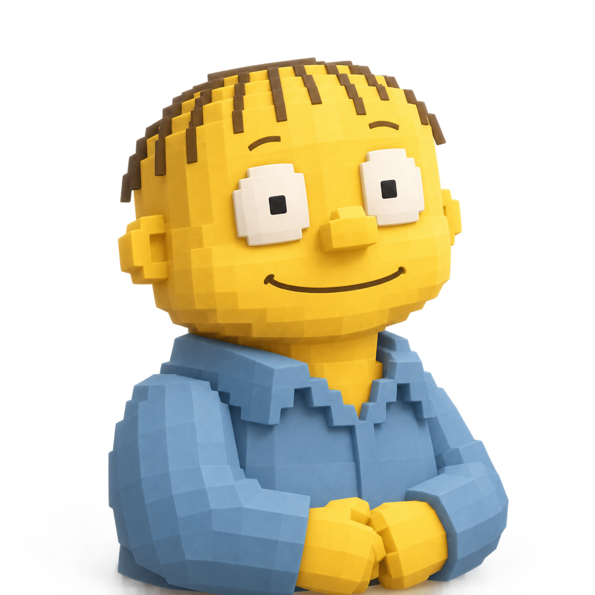

<!DOCTYPE html>
<html lang="ko">
<head>
  <meta charset="UTF-8">
  <meta name="viewport" content="width=device-width, initial-scale=1.0">
  <meta name="robots" content="noindex">
  <title>덱 제목</title>
  <!-- Design B "Monitor": graphite canvas matching the dark Studio captures, one accent (Ralph shirt blue),
       5-segment progress line in the injected footer. Authoring classes are unprefixed; everything the
       script injects at runtime is a deck-* element or class and carries data-runtime. -->
  <style>
    @font-face { font-family: "Plex KR"; src: url("fonts/IBMPlexSansKR-Regular.ttf") format("truetype"); font-weight: 400; font-display: block; }
    @font-face { font-family: "Plex KR"; src: url("fonts/IBMPlexSansKR-SemiBold.ttf") format("truetype"); font-weight: 600; font-display: block; }

    :root {
      --stage: #121417;
      --bg: #1f2226;
      --well: #272b30;
      --code-bg: #17191d;
      --ink: #ededea;
      --muted: #9ca1a8;
      --rule: #3a3f45;
      --done: #6b7178;
      --accent: #8db4e8;
      --hl: #f5c842; /* Ralph yellow: one key phrase per slide at most */
      --font: "Plex KR", sans-serif;
      /* Chrome ignores ui-monospace; Menlo (macOS) / Consolas (Windows) carry Latin, Hangul falls through to Plex KR. */
      --mono: ui-monospace, "SF Mono", Menlo, Consolas, var(--font), monospace;
      /* 1.25 scale, base 32 */
      --t-2xs: 21px; --t-xs: 26px; --t-s: 32px; --t-m: 40px; --t-l: 50px; --t-xl: 62px; --t-xxl: 98px; --t-3xl: 122px;
    }
    * { margin: 0; padding: 0; box-sizing: border-box; }

    /* === FIXED 16:9 STAGE === */
    html, body { width: 100%; height: 100%; overflow: hidden; background: var(--stage); }
    body { font-family: var(--font); color: var(--ink); font-weight: 400; }
    .deck-viewport { position: fixed; inset: 0; overflow: hidden; background: var(--stage); }
    .deck-stage { position: absolute; left: 0; top: 0; width: 1920px; height: 1080px; overflow: hidden; transform-origin: 0 0; background: var(--bg); }
    .slide { position: absolute; inset: 0; width: 1920px; height: 1080px; padding: 84px 120px 180px; display: flex; flex-direction: column; overflow: hidden; visibility: hidden; opacity: 0; pointer-events: none; background: var(--bg); }
    .slide.active, .slide.visible { visibility: visible; opacity: 1; pointer-events: auto; z-index: 1; }
    img, svg { max-width: 100%; max-height: 100%; }
    img[src$="codex.svg"] { filter: invert(1); }

    @media print {
      html, body { width: 1920px; height: auto; overflow: visible; background: var(--bg); }
      .deck-viewport { position: static; overflow: visible; }
      .deck-stage { position: static; width: auto; height: auto; transform: none !important; }
      .slide { position: relative; visibility: visible !important; opacity: 1 !important; break-after: page; }
      .slide:last-child { break-after: auto; }
    }

    /* === TYPE === */
    .slide h1, .slide h2, .slide h3, .slide p, .slide li, .slide td, .slide th { word-break: keep-all; overflow-wrap: break-word; }
    h1, h2, h3, strong, th { font-weight: 600; }
    h1, h2, h3 { padding-bottom: 0.15em; }
    .deck-sec-name { padding-bottom: 0.2em; }
    .slide > h2 { font-size: var(--t-xl); line-height: 1.3; letter-spacing: -0.02em; max-width: 1680px; }
    h3 { font-size: var(--t-m); line-height: 1.3; letter-spacing: -0.01em; }
    p, li { font-size: var(--t-s); line-height: 1.5; }
    .lead { margin-top: 18px; max-width: 1500px; font-size: var(--t-m); line-height: 1.5; color: var(--muted); }
    .body { flex: 1; min-height: 0; margin-top: 44px; }
    .body:not(:has(figure, svg, table, pre, .split, .flow, .compare, .convert, .loop, img)) { display: flex; flex-direction: column; justify-content: center; padding-bottom: 72px; }
    .accent { color: var(--accent); }
    .key { color: var(--hl); font-weight: 600; }
    .slide a, .deck-panel-body a { color: var(--accent); text-decoration: none; border-bottom: 1px solid currentColor; }
    code { font-family: var(--font); color: var(--accent); }
    .kind { align-self: flex-start; margin-bottom: 22px; padding: 4px 16px; border: 1.5px solid var(--accent); border-radius: 999px; font-size: var(--t-2xs); font-weight: 600; color: var(--accent); }

    /* === LISTS === */
    ul.points { list-style: none; display: grid; gap: 20px; align-content: start; }
    ul.points li { position: relative; padding-left: 38px; }
    ul.points li::before { content: ""; position: absolute; left: 0; top: 0.72em; width: 16px; height: 2px; background: var(--muted); }
    ol.steps { list-style: none; counter-reset: step; display: grid; gap: 22px; align-content: start; }
    ol.steps > li { counter-increment: step; position: relative; padding-left: 76px; min-height: 56px; }
    ol.steps > li::before { content: counter(step); position: absolute; left: 0; top: 0; width: 52px; height: 52px; border: 2px solid var(--rule); border-radius: 50%; display: grid; place-items: center; font-size: var(--t-xs); font-weight: 600; font-variant-numeric: tabular-nums; }
    ol.steps > li > pre.code { margin-top: 12px; }
    ol.steps > li > pre.code:first-child { margin-top: 0; }
    ol.steps > li:has(> pre.code:first-child)::before { top: 18px; }
    ol.checklist { list-style: none; counter-reset: check; display: grid; gap: 24px; align-content: start; }
    ol.checklist > li { counter-increment: check; position: relative; padding-left: 72px; min-height: 50px; }
    ol.checklist > li::before { content: counter(check); position: absolute; left: 0; top: 2px; width: 44px; height: 44px; border: 2px solid var(--accent); border-radius: 8px; display: grid; place-items: center; font-size: var(--t-2xs); font-weight: 600; color: var(--accent); }

    /* === LAYOUT === */
    .split { display: grid; grid-template-columns: minmax(0, 1fr) minmax(0, 1.35fr); gap: 72px; align-items: start; }
    .split.even { grid-template-columns: minmax(0, 1fr) minmax(0, 1fr); }
    .split.wide-text { grid-template-columns: minmax(0, 1.2fr) minmax(0, 1fr); }
    .split > * { min-width: 0; min-height: 0; max-height: 100%; }
    .compare { display: grid; grid-template-columns: repeat(2, minmax(0, 1fr)); gap: 80px; align-content: start; }
    .compare .col { border-top: 2px solid var(--ink); padding-top: 26px; }
    .compare .col h3 { margin-bottom: 24px; }
    .compare .col.off { border-top-color: var(--rule); color: var(--muted); }
    .compare .col.on { border-top-color: var(--accent); }
    .compare .col.on h3 { color: var(--accent); }
    .flow { display: flex; gap: 18px; align-items: stretch; }
    .flow-step { flex: 1; padding-top: 22px; border-top: 4px solid var(--rule); font-size: var(--t-xs); line-height: 1.45; }
    .flow-step strong { display: block; margin-bottom: 8px; font-size: var(--t-s); }

    /* === CAPTURE === */
    /* The frame (border, well) sits on the img, so the box hugs the image instead of leaving well-colored gaps. */
    figure.shot { position: relative; height: 100%; display: flex; align-items: flex-start; justify-content: flex-end; overflow: hidden; cursor: zoom-in; }
    figure.shot img { display: block; max-width: 100%; max-height: 100%; object-fit: contain; border: 1px solid var(--rule); border-radius: 12px; background: var(--well); }
    /* Small pixel-art cut (sprite cell) pinned bottom-right of a text-only slide; one per slide, see AUTHORING.md. */
    figure.cut { position: absolute; right: 120px; bottom: 120px; width: 180px; height: 180px; margin: 0; }
    figure.cut img { display: block; width: 100%; height: 100%; object-fit: contain; image-rendering: pixelated; }
    /* Bust cells (expr-*) end in a flat crop at the cell edge; fade it into the slide ground. */
    figure.cut img[src*="/expr-"] { -webkit-mask-image: linear-gradient(#000 72%, transparent); mask-image: linear-gradient(#000 72%, transparent); }
    figure.shot.zoomed { position: absolute; inset: 0; z-index: 20; height: auto; align-items: center; justify-content: center; background: var(--bg); cursor: zoom-out; }
    figure.shot.zoomed img { border: 0; border-radius: 0; background: none; }
    .notes { display: grid; grid-template-columns: repeat(2, minmax(0, 1fr)); gap: 80px; margin-top: 28px; }
    .pending { color: var(--muted); border: 2px dashed var(--rule); border-radius: 10px; font-weight: 400; }
    span.pending { padding: 0 12px; }
    figure.pending { height: 100%; display: grid; place-items: center; font-size: var(--t-xs); cursor: default; }
    /* Screen description card: same slot as figure.shot, swapped for <figure class="shot"></figure> when the capture arrives. */
    figure.shot.brief { display: grid; grid-template-columns: minmax(0, max-content); place-content: center; justify-items: start; gap: 22px; padding: 48px 64px; border: 1px solid var(--rule); border-radius: 12px; background: var(--well); cursor: default; }
    figure.shot.brief::before { content: ""; width: 64px; height: 48px; background: var(--muted);
      -webkit-mask: url("data:image/svg+xml,%3Csvg xmlns='http://www.w3.org/2000/svg' viewBox='0 0 64 48'%3E%3Crect x='3' y='3' width='58' height='36' rx='4' fill='none' stroke='%23000' stroke-width='4'/%3E%3Cpath d='M3 13h58M24 45h16' stroke='%23000' stroke-width='4'/%3E%3C/svg%3E") center / contain no-repeat;
      mask: url("data:image/svg+xml,%3Csvg xmlns='http://www.w3.org/2000/svg' viewBox='0 0 64 48'%3E%3Crect x='3' y='3' width='58' height='36' rx='4' fill='none' stroke='%23000' stroke-width='4'/%3E%3Cpath d='M3 13h58M24 45h16' stroke='%23000' stroke-width='4'/%3E%3C/svg%3E") center / contain no-repeat; }
    figure.shot.brief h3 { font-size: var(--t-s); }
    figure.shot.brief ul.points { gap: 14px; }
    figure.shot.brief li { font-size: var(--t-xs); line-height: 1.45; }

    /* === REVEAL PANEL (deck-panel injected) === */
    button.reveal-btn { align-self: flex-start; display: inline-flex; align-items: center; gap: 12px; padding: 10px 22px; font: 600 var(--t-2xs)/1.4 var(--font); color: var(--accent); background: transparent; border: 1.5px solid var(--accent); border-radius: 10px; cursor: pointer; }
    button.reveal-btn::after { content: ""; width: 10px; height: 10px; border-top: 2px solid currentColor; border-right: 2px solid currentColor; transform: rotate(45deg); }
    /* Several inline reveal buttons on one slide wrap in a row instead of stacking one per line. */
    .reveal-group { display: flex; flex-wrap: wrap; gap: 16px; margin-top: 20px; }
    .reveal-group > button.reveal-btn { align-self: auto; }
    button.reveal-btn.qa { position: absolute; top: 32px; right: 44px; z-index: 2; width: 64px; height: 64px; padding: 0; justify-content: center; border-radius: 50%; font-size: var(--t-2xs); }
    button.reveal-btn.qa::after { content: none; }
    button.reveal-btn:hover, button.reveal-btn:focus-visible { color: var(--bg); background: var(--accent); outline: none; }
    deck-panel { position: absolute; inset: 0; z-index: 50; display: grid; place-items: center; background: rgba(18, 20, 23, 0.72); }
    .deck-panel-box { width: 1400px; max-height: 880px; display: flex; flex-direction: column; background: var(--bg); border: 1px solid var(--rule); border-radius: 16px; box-shadow: 0 24px 80px rgba(0, 0, 0, 0.5); }
    .deck-panel-head { display: flex; align-items: center; gap: 24px; padding: 28px 40px 22px; border-bottom: 1px solid var(--rule); }
    .deck-panel-head .kind { margin: 0; }
    .deck-panel-head h3 { flex: 1; min-width: 0; padding: 0; font-size: var(--t-m); word-break: keep-all; }
    deck-panel button { font: 600 var(--t-2xs)/1.4 var(--font); color: var(--ink); background: var(--well); border: 1px solid var(--rule); border-radius: 10px; padding: 8px 20px; cursor: pointer; }
    deck-panel button:hover, deck-panel button:focus-visible { border-color: var(--accent); outline: none; }
    .deck-panel-body { overflow-y: auto; padding: 32px 40px 40px; display: grid; gap: 20px; align-content: start; scrollbar-width: thin; scrollbar-color: var(--done) transparent; }
    .deck-panel-body:focus-visible { outline: 2px solid var(--accent); outline-offset: -2px; }
    .deck-panel-body p, .deck-panel-body li { word-break: keep-all; overflow-wrap: break-word; }
    .deck-panel-body pre.code { font-size: var(--t-2xs); overflow: visible; }
    @media print { button.reveal-btn, deck-panel, deck-copy { display: none !important; } }

    /* === CODE & PROMPT === */
    /* Every pre.code (slide or panel) is one terminal window with the same 44px bar as the .term mockup: the bar (3 dots,
       rule line) is painted by backgrounds, data-label="..." adds a bar label, and the shell JS puts the copy
       button (deck-copy, runtime) in the bar's right end. */
    pre.code { --bar: 44px; position: relative; font-family: var(--mono); font-size: var(--t-xs); line-height: 1.55; white-space: pre-wrap; overflow-wrap: anywhere; color: var(--ink); border: 1px solid var(--rule); border-radius: 8px; padding: calc(var(--bar) + 21px) 30px 20px; overflow: hidden;
      background:
        radial-gradient(circle 6.5px at 24.5px calc(var(--bar) / 2), var(--rule) 6px, transparent 6.5px) no-repeat,
        radial-gradient(circle 6.5px at 47.5px calc(var(--bar) / 2), var(--rule) 6px, transparent 6.5px) no-repeat,
        radial-gradient(circle 6.5px at 70.5px calc(var(--bar) / 2), var(--rule) 6px, transparent 6.5px) no-repeat,
        linear-gradient(var(--rule), var(--rule)) 0 var(--bar) / 100% 1px no-repeat,
        linear-gradient(var(--well), var(--well)) 0 0 / 100% var(--bar) no-repeat,
        var(--code-bg); }
    pre.code[data-label]::before { content: attr(data-label); position: absolute; left: 99px; top: 0; font-family: var(--font); font-size: var(--t-2xs); line-height: var(--bar); color: var(--muted); }
    pre.code > deck-copy { position: absolute; top: calc((var(--bar) - 32px) / 2); right: 12px; }
    deck-copy button { font: 600 var(--t-2xs)/1.25 var(--font); color: var(--muted); background: transparent; border: 1px solid var(--rule); border-radius: 6px; padding: 2px 14px; cursor: pointer; }
    deck-copy button:hover, deck-copy button:focus-visible { color: var(--ink); border-color: var(--accent); outline: none; }
    .deck-copy[data-copy="ok"] { color: var(--accent); border-color: var(--accent); }
    pre.code .k { color: var(--accent); }
    pre.code .c { color: var(--muted); }
    pre.code.scroll { height: 100%; overflow-y: auto; background-attachment: local; font-size: var(--t-2xs); scrollbar-width: thin; scrollbar-color: var(--done) transparent; }

    /* === TABLE === */
    table.data { width: 100%; border-collapse: collapse; font-size: var(--t-xs); line-height: 1.4; }
    table.data th { text-align: left; font-size: var(--t-2xs); color: var(--muted); padding: 0 18px 14px; border-bottom: 2px solid var(--done); }
    table.data td { padding: 16px 18px; border-bottom: 1px solid var(--rule); vertical-align: top; }
    table.data .num { text-align: right; font-variant-numeric: tabular-nums; }
    table.data tr.hl td { color: var(--accent); font-weight: 600; }

    /* === LOGOS === */
    .logos { display: flex; gap: 32px; align-items: center; }
    .logos img { width: 44px; height: 44px; }
    .logos span { display: flex; align-items: center; gap: 12px; font-size: var(--t-2xs); color: var(--muted); }
    .logos span img { width: 34px; height: 34px; }

    /* === COVER === */
    .cover .brandbar { position: absolute; left: 120px; right: 120px; top: 72px; display: flex; align-items: center; gap: 22px; }
    .cover .brandbar .logos { margin-left: auto; }
    .cover .monogram { width: 56px; height: 56px; }
    .cover .wordmark { height: 24px; }
    .cover h1 { position: absolute; left: 0; right: 0; top: 220px; text-align: center; font-size: var(--t-xxl); line-height: 1.25; letter-spacing: -0.03em; }
    .cover .subtitle { position: absolute; left: 310px; width: 1300px; top: 490px; text-align: center; color: var(--muted); }
    .cover .cover-ralph { position: absolute; left: 640px; top: 628px; width: 640px; height: 452px; overflow: hidden; }
    .cover .cover-ralph img { width: 640px; height: 640px; max-height: none; }

    /* === AGENDA === */
    ol.agenda { list-style: none; margin-top: 40px; }
    ol.agenda li { display: grid; grid-template-columns: 120px 1fr auto; align-items: center; height: 108px; border-top: 1px solid var(--rule); }
    ol.agenda li:has(.goal) { height: 132px; }
    ol.agenda:has(> li.pre) li:has(.goal) { height: 112px; } /* a pre row plus five sections still ends above y 900 */
    ol.agenda:has(> li.pre) h3 { font-size: var(--t-m); }
    ol.agenda .goal { display: block; margin-top: 4px; font-size: var(--t-xs); line-height: 1.35; color: var(--muted); }
    ol.agenda li:last-child { border-bottom: 1px solid var(--rule); }
    ol.agenda .no { font-size: var(--t-s); color: var(--muted); font-variant-numeric: tabular-nums; }
    ol.agenda h3 { font-size: var(--t-l); line-height: 1.2; letter-spacing: -0.015em; }

    /* === SECTION COVER (deck-sechead / deck-bigbar injected) === */
    .section-cover > h2 { margin-top: 26px; max-width: 1500px; }
    .section-cover .lead { font-size: var(--t-s); }
    .section-cover .logos { margin-top: 36px; }
    .section-cover .logos img { width: 56px; height: 56px; }
    deck-sechead { display: block; margin-top: 60px; }
    deck-sechead .deck-sec-id { display: flex; gap: 26px; align-items: baseline; font-size: var(--t-l); font-weight: 600; color: var(--accent); }
    deck-sechead .deck-sec-id small { font-size: var(--t-s); font-weight: 400; color: var(--muted); font-variant-numeric: tabular-nums; }
    deck-sechead .deck-sec-name { display: block; margin-left: -6px; font-size: var(--t-3xl); line-height: 1.15; font-weight: 600; letter-spacing: -0.035em; }
    deck-bigbar { position: absolute; left: 120px; right: 120px; top: 800px; display: grid; grid-template-columns: repeat(var(--sections, 5), minmax(0, 1fr)); gap: 16px; }
    deck-bigbar div { display: grid; gap: 16px; align-content: start; }
    deck-bigbar i { display: block; height: 8px; background: var(--rule); }
    deck-bigbar span { font-size: var(--t-2xs); line-height: 1.4; color: var(--muted); }
    deck-bigbar b { display: block; font-weight: 600; }
    deck-bigbar .done i { background: var(--done); }
    deck-bigbar .now i { background: var(--accent); }
    deck-bigbar .now span { color: var(--ink); }
    deck-bigbar .now b { color: var(--accent); }

    /* === FOOTER (deck-footer injected) === */
    deck-footer { position: absolute; left: 120px; right: 120px; top: 972px; height: 80px; display: flex; align-items: center; gap: 60px; }
    .deck-progress { flex: 1; align-self: flex-end; margin-bottom: 22px; display: grid; grid-template-columns: repeat(var(--sections, 5), minmax(0, 1fr)); gap: 10px; }
    .deck-progress div { position: relative; min-width: 0; }
    .deck-progress span { position: absolute; left: 0; bottom: 18px; width: max-content; font-size: var(--t-2xs); line-height: 1.4; color: var(--ink); white-space: nowrap; }
    .deck-progress div:last-child span { left: auto; right: 0; }
    .deck-progress span b { color: var(--accent); font-weight: 600; }
    .deck-progress i { display: block; height: 4px; background: var(--rule); }
    .deck-progress .done i { background: var(--done); }
    .deck-progress .now i { background: var(--accent); }
    .deck-progress.idle { opacity: 0.5; }
    .deck-brand { margin-left: auto; display: flex; align-items: center; gap: 16px; }
    .deck-ralph { width: 80px; height: 80px; object-fit: cover; object-position: 50% 0; }
    .deck-wordmark { height: 20px; }
    .deck-page { margin-left: 10px; font-size: var(--t-2xs); color: var(--muted); font-variant-numeric: tabular-nums; }

    /* === MOTION SAMPLES === */
    svg.loop { width: 100%; height: 100%; }
    svg.loop text { font-family: var(--font); fill: var(--ink); }
    .convert { display: grid; grid-template-columns: 440px 110px minmax(0, 1fr); row-gap: 22px; align-items: center; }
    .convert > div { display: contents; }
    .convert .from { display: flex; flex-wrap: wrap; gap: 10px 14px; font-size: var(--t-xs); color: var(--muted); }
    .convert .from code { padding: 2px 12px; border: 1px solid var(--rule); border-radius: 8px; }
    .convert .arrow { height: 2px; margin: 0 18px; background: var(--accent); position: relative; }
    .convert .arrow::after { content: ""; position: absolute; right: -2px; top: -6px; border: 7px solid transparent; border-left: 11px solid var(--accent); border-right: 0; }
    .convert .to { margin: 0; padding: 14px 24px; }
    .convert .head { font-size: var(--t-2xs); color: var(--muted); }

    /* === MOCKUPS: terminal, chat window, box flow === */
    .term { background: var(--code-bg); border: 1px solid var(--rule); border-radius: 8px; overflow: hidden; font-family: var(--mono); }
    .term .bar { display: flex; align-items: center; gap: 10px; height: 45px; padding: 0 18px; background: var(--well); border-bottom: 1px solid var(--rule); }
    .term .bar i { width: 13px; height: 13px; border-radius: 50%; background: var(--rule); }
    .term .bar span { margin-left: 12px; font-size: var(--t-2xs); color: var(--muted); font-family: var(--font); }
    .term pre { margin: 0; padding: 24px 30px; font-family: inherit; font-size: 24px; line-height: 1.6; white-space: pre-wrap; color: var(--ink); }
    .term .p { color: var(--accent); }
    .term .m { color: var(--muted); }
    .term .ok { color: #8fd19e; }
    .tr-win { background: var(--well); border: 1px solid var(--rule); border-radius: 8px; display: flex; flex-direction: column; overflow: hidden; }
    .tr-win .bar { padding: 14px 22px; border-bottom: 1px solid var(--rule); font-size: var(--t-2xs); color: var(--muted); }
    .tr-win .msg { padding: 18px 26px; font-size: var(--t-xs); line-height: 1.5; }
    .tr-win .msg.user { align-self: flex-end; max-width: 80%; margin: 18px 22px 0; background: var(--code-bg); border-radius: 8px; }
    .tr-win .msg.agent { color: var(--ink); }
    .tr-win .msg .who { display: block; font-size: var(--t-2xs); color: var(--muted); margin-bottom: 6px; }
    .boxflow { position: relative; display: flex; align-items: stretch; justify-content: space-between; gap: 64px; }
    .boxflow > .fbox { position: relative; z-index: 1; flex: 1; padding: 24px 26px; background: var(--well); border: 1px solid var(--rule); border-radius: 8px; font-size: var(--t-xs); line-height: 1.45; }
    .boxflow > .fbox.on { border-color: var(--accent); }
    .boxflow > .fbox strong { display: block; margin-bottom: 8px; font-size: var(--t-s); }
    .boxflow > .fbox .out { display: block; margin-top: 12px; font-size: var(--t-2xs); color: var(--muted); }
    .boxflow > svg.links { position: absolute; inset: 0; width: 100%; height: 100%; max-width: none; max-height: none; z-index: 0; overflow: visible; pointer-events: none; }
    .boxflow > svg.links path { fill: none; stroke: var(--done); stroke-width: 3; }

    /* === ORCA MOCKUP: HTML/CSS stand-in for the Orca ADE window, fictional content only === */
    .orca-win { display: grid; grid-template-columns: 240px minmax(0, 1fr) 250px; height: 640px; background: var(--code-bg); border: 1px solid var(--rule); border-radius: 12px; overflow: hidden; font-size: 17px; line-height: 1.4; color: var(--ink); }
    .orca-side, .orca-panel { display: flex; flex-direction: column; gap: 6px; padding: 0 14px 14px; background: var(--well); }
    .orca-side { border-right: 1px solid var(--rule); }
    .orca-panel { border-left: 1px solid var(--rule); }
    .orca-main { display: flex; flex-direction: column; min-width: 0; }
    .orca-head { display: flex; align-items: center; gap: 8px; height: 52px; }
    .orca-head i { width: 12px; height: 12px; border-radius: 50%; background: var(--rule); }
    .orca-head b { margin-left: 8px; font-weight: 600; }
    .orca-search { padding: 8px 12px; border-radius: 8px; background: var(--code-bg); color: var(--muted); }
    .orca-nav { padding: 4px 12px; color: var(--muted); }
    .orca-label { margin-top: 14px; padding: 0 4px; font-size: 15px; color: var(--muted); }
    .orca-repo { display: flex; align-items: center; gap: 8px; padding: 6px 8px; font-weight: 600; }
    .orca-badge { padding: 0 8px; border: 1px solid var(--rule); border-radius: 6px; font-size: 13px; font-weight: 400; color: var(--muted); }
    .orca-wt { padding: 4px 8px 4px 26px; border-radius: 6px; font-size: 15px; color: var(--muted); }
    .orca-wt.on { background: var(--code-bg); color: var(--ink); box-shadow: inset 3px 0 0 var(--hl); }
    .orca-tabs { display: flex; align-items: flex-end; gap: 4px; height: 52px; padding: 0 10px; border-bottom: 1px solid var(--rule); font-size: 15px; color: var(--muted); }
    .orca-tabs span { padding: 8px 12px; white-space: nowrap; }
    .orca-tabs span.on { color: var(--ink); box-shadow: inset 0 -2px 0 var(--accent); }
    .orca-panel .orca-tabs { margin: 0 -14px; padding: 0 6px; background: var(--well); }
    .orca-term { flex: 1; margin: 0; padding: 22px 24px; font-family: var(--mono); font-size: 16px; line-height: 1.75; white-space: pre-wrap; color: var(--ink); }
    .orca-p { color: var(--accent); }
    .orca-dot { color: var(--done); }
    .orca-ok { color: #8fd19e; }
    .orca-status { padding: 10px 24px; border-top: 1px solid var(--rule); font-family: var(--mono); font-size: 14px; color: var(--muted); }
    .orca-tree { display: grid; gap: 4px; margin-top: 10px; font-size: 15px; }
    .orca-tree .d1 { padding-left: 16px; color: var(--muted); }
    .orca-tree .d2 { padding-left: 32px; }
    .orca-tree em { float: right; font-style: normal; font-size: 13px; }
    .orca-tree .m em { color: var(--hl); }
    .orca-tree .u em { color: #8fd19e; }
    .orca-sc { display: grid; gap: 8px; margin-top: auto; padding-top: 14px; border-top: 1px solid var(--rule); }
    .orca-sc .orca-label { margin-top: 0; }
    .orca-sc-row { padding: 0 4px; font-size: 15px; }
    .orca-pr { padding: 8px 12px; border-radius: 8px; background: var(--accent); color: var(--code-bg); font-size: 15px; font-weight: 600; text-align: center; }

    /* === MESSAGE LAYOUTS: statement, quote (slide-level), versus, hero-num, grid4 (on .body) === */
    /* Layout lives on containers only, so any child may carry data-anim and take GSAP transforms. */
    .slide.statement, .slide.quote { justify-content: center; }
    .slide.statement { align-items: center; text-align: center; }
    .slide.statement > h2 { max-width: 1560px; font-size: var(--t-xxl); line-height: 1.25; letter-spacing: -0.03em; text-wrap: balance; }
    .slide.statement > .sub { margin-top: 40px; max-width: 1300px; font-size: var(--t-m); line-height: 1.5; color: var(--muted); }
    .slide.quote > blockquote { position: relative; max-width: 1500px; margin-left: 60px; }
    .slide.quote > blockquote p { font-size: var(--t-xl); line-height: 1.45; font-weight: 600; letter-spacing: -0.015em; text-wrap: balance; }
    .slide.quote > blockquote p:first-child::before { content: "\201C"; position: absolute; left: -0.62em; color: var(--done); }
    .slide.quote > blockquote p:first-child::after { content: "\201D"; color: var(--done); }
    .slide.quote > blockquote p + p { margin-top: 24px; }
    .slide.quote > .cite { margin: 48px 0 0 60px; font-size: var(--t-s); color: var(--muted); }
    .body.versus, .body.hero-num, .body.grid4 { display: grid; align-content: center; padding-bottom: 72px; }
    /* The divider is a grid item (::before) in the middle column, so it is exactly as tall as the cards. */
    .body.versus { grid-template-columns: minmax(0, 1fr) 1px minmax(0, 1fr); gap: 56px; }
    .body.versus::before { content: ""; grid-column: 2; grid-row: 1; background: var(--rule); }
    .versus .side { padding: 36px 48px 44px; background: var(--well); border: 1px solid var(--rule); border-radius: 12px; }
    .versus .side > h3 { margin-bottom: 30px; padding-bottom: 22px; border-bottom: 1px solid var(--rule); }
    .versus .side.on { border-color: var(--accent); }
    .versus .side.on > h3 { color: var(--accent); }
    .body.hero-num { grid-auto-flow: column; grid-auto-columns: minmax(0, 1fr); gap: 80px; }
    .hero-num strong { display: block; font-size: var(--t-3xl); line-height: 1.15; letter-spacing: -0.035em; font-variant-numeric: tabular-nums; }
    .hero-num:has(> :nth-child(3)) strong { font-size: var(--t-xxl); }
    .hero-num p { margin-top: 20px; color: var(--muted); }
    .body.grid4 { grid-template-columns: repeat(2, minmax(0, 1fr)); gap: 32px; }
    .grid4 .card { display: grid; grid-template-columns: 64px minmax(0, 1fr); column-gap: 32px; align-content: start; padding: 36px 44px; background: var(--well); border: 1px solid var(--rule); border-radius: 12px; }
    .grid4 .card:not(:has(> .icon)) { grid-template-columns: minmax(0, 1fr); }
    .grid4 .card > .icon { grid-row: span 2; width: 64px; height: 64px; color: var(--ink); }
    .grid4 .card > .icon svg { width: 100%; height: 100%; fill: none; stroke: currentColor; stroke-width: 3; stroke-linecap: round; stroke-linejoin: round; }
    .grid4 .card > .icon img { width: 100%; height: 100%; object-fit: contain; }
    .grid4 .card > h3 { font-size: var(--t-m); }
    .grid4 .card > p { margin-top: 8px; font-size: var(--t-xs); line-height: 1.45; color: var(--muted); }
  </style>
</head>
<body>
  <div class="deck-viewport">
    <main class="deck-stage" id="deckStage" aria-label="덱 제목">
<!-- SECTIONS -->
    </main>
  </div>
  <script src="vendor/gsap.min.js"></script>
  <!-- MOTION_SCRIPTS -->
  <script>
    // The only definition of section names. data-section="S1".."S5" on a <section> refers to these ids.
    const SECTIONS = [
      { id: "S1", name: "섹션 1 이름", goal: "섹션 1에서 수강생이 하는 일", logos: [] },
      { id: "S2", name: "섹션 2 이름", goal: "섹션 2에서 수강생이 하는 일", logos: [] },
      { id: "S3", name: "섹션 3 이름", goal: "섹션 3에서 수강생이 하는 일", logos: [] },
    ];
    document.documentElement.style.setProperty("--sections", SECTIONS.length);

    // Motion registry: data-motion="<name>" on a slide plays MOTIONS[name](slide) on entry.
    // Motions are authored in deck/motions/*.js and register on window.DECK_MOTIONS (one file per owner).
    // Each builder returns a GSAP timeline made of from/fromTo tweens, so the authored DOM is the end state.
    // Every tween target carries data-anim; dev.py strips the style/transform/data-svg-origin GSAP writes there.
    const MOTIONS = Object.assign({}, window.DECK_MOTIONS);

    const slides = [...document.querySelectorAll(".slide")];
    const stage = document.getElementById("deckStage");
    const pad = n => String(n).padStart(2, "0");
    const reducedMotion = matchMedia("(prefers-reduced-motion: reduce)");
    let staticMotion = new URLSearchParams(location.search).has("static");
    let motion = null;

    const state = (i, n) => (i + 1 < n ? "done" : i + 1 === n ? "now" : "");
    const progressCells = n => SECTIONS.map((s, i) =>
      `<div class="${state(i, n)}">${i + 1 === n ? `<span><b>${s.id}</b> ${s.name}&ensp;${n} / ${SECTIONS.length}</span>` : ""}<i></i></div>`).join("");
    const logoImgs = s => s.logos.map(file => ``).join("");

    slides.forEach((slide, index) => {
      const n = SECTIONS.findIndex(s => s.id === slide.dataset.section) + 1;
      if (slide.classList.contains("section-cover") && n) {
        const s = SECTIONS[n - 1];
        slide.insertAdjacentHTML("afterbegin", `<deck-sechead data-runtime><span class="deck-sec-id">${s.id}<small>${n} / ${SECTIONS.length}</small></span><span class="deck-sec-name">${s.name}</span></deck-sechead>`);
        slide.insertAdjacentHTML("beforeend", `<deck-bigbar data-runtime>${SECTIONS.map((t, i) => `<div class="${state(i, n)}"><i></i><span><b>${t.id}</b>${t.name}</span></div>`).join("")}</deck-bigbar>`);
      }
      slide.querySelectorAll("ol.agenda").forEach(list => {
        list.insertAdjacentHTML("afterbegin", SECTIONS.map(s => `<li data-runtime><span class="no">${s.id}</span><div><h3>${s.name}</h3>${s.goal ? `<span class="goal">${s.goal}</span>` : ""}</div><span class="logos">${logoImgs(s)}</span></li>`).join(""));
        list.prepend(...list.querySelectorAll(":scope > li.pre")); // authored rows for slides before S1 stay on top
      });
      if (slide.classList.contains("cover")) return;
      const progress = slide.classList.contains("section-cover") ? "" : `<div class="deck-progress${n ? "" : " idle"}">${progressCells(n)}</div>`;
      slide.insertAdjacentHTML("beforeend", `<deck-footer data-runtime>${progress}<div class="deck-brand"><span class="deck-page">${pad(index + 1)}</span></div></deck-footer>`);
    });
    addCopyButtons(stage);

    function playMotion(slide) {
      if (motion) motion.revert();
      motion = null;
      const build = MOTIONS[slide.dataset.motion];
      if (!build || !window.gsap) return;
      motion = build(slide);
      if (staticMotion || reducedMotion.matches) motion.progress(1);
    }
    function finishMotion() {
      staticMotion = true;
      if (motion) motion.progress(1);
    }

    // Reveal panel: button.reveal-btn[data-panel=id] opens <template class="panel" id=id> in a runtime deck-panel
    // on the stage (outside every <section>). Never opens under ?static=1 or print.
    const staticView = new URLSearchParams(location.search).has("static");
    const PANEL_KINDS = { prompt: "프롬프트", qa: "세션 질문", text: "원문" };
    let panel = null;
    let panelTrigger = null;

    function openPanel(trigger) {
      const tpl = document.getElementById(trigger.dataset.panel);
      if (staticView || matchMedia("print").matches || !(tpl instanceof HTMLTemplateElement)) return;
      closePanel(false);
      const kind = PANEL_KINDS[tpl.dataset.kind] ? tpl.dataset.kind : "text";
      stage.insertAdjacentHTML("beforeend", `<deck-panel data-runtime><div class="deck-panel-box" role="dialog" aria-modal="true" aria-labelledby="deck-panel-title"><header class="deck-panel-head"><span class="kind">${PANEL_KINDS[kind]}</span><h3 id="deck-panel-title"></h3><button type="button" class="deck-panel-close">닫기</button></header><div class="deck-panel-body" tabindex="0"></div></div></deck-panel>`);
      panel = stage.lastElementChild;
      panel.querySelector("h3").textContent = tpl.dataset.title || trigger.textContent.trim();
      const body = panel.querySelector(".deck-panel-body");
      body.append(tpl.content.cloneNode(true));
      addCopyButtons(body);
      // pre.code가 없는 prompt 패널만 본문 전체를 복사하는 버튼을 제목 줄에 둔다.
      if (kind === "prompt" && !body.querySelector("pre.code")) {
        panel.querySelector(".deck-panel-close").insertAdjacentHTML("beforebegin", `<button type="button" class="deck-copy">복사</button>`);
        panel.querySelector(".deck-panel-head .deck-copy").copyTarget = body;
      }
      panelTrigger = trigger;
      panel.querySelector(".deck-panel-close").focus();
    }
    function closePanel(restoreFocus = true) {
      if (!panel) return;
      panel.remove();
      panel = null;
      if (restoreFocus && panelTrigger) panelTrigger.focus();
      panelTrigger = null;
    }
    // 모든 pre.code는 터미널 창이고, 복사 버튼을 창 막대 오른쪽(pre 첫 자식)에 넣는다. 버튼을 런타임 요소
    // deck-copy[data-runtime]로 감싸 두면 dev.py가 편집 저장 때 지운다.
    function addCopyButtons(root) {
      root.querySelectorAll("pre.code").forEach(pre => pre.insertAdjacentHTML("afterbegin", `<deck-copy data-runtime><button type="button" class="deck-copy">복사</button></deck-copy>`));
    }
    async function copyPanelText(button) {
      const target = button.copyTarget || button.closest("pre.code");
      const skip = target.firstChild?.nodeName === "DECK-COPY" ? target.firstChild : null;
      // textContent는 강조 span 없이 원문 글자만 돌려준다. pre 안의 복사 버튼 글자는 빼고 읽는다.
      const text = [...target.childNodes].filter(node => node !== skip).map(node => node.textContent).join("");
      const result = navigator.clipboard?.writeText ? await navigator.clipboard.writeText(text).then(() => "ok", () => "fail") : "select";
      if (result !== "ok") {
        // 클립보드 API가 없거나 거부되면 원문을 선택해 두어 Ctrl+C로 복사하게 한다.
        const range = document.createRange();
        range.selectNodeContents(target);
        if (skip) range.setStartAfter(skip);
        getSelection().removeAllRanges();
        getSelection().addRange(range);
      }
      button.dataset.copy = result;
      button.textContent = { ok: "복사함", fail: "복사 실패, Ctrl+C로 복사", select: "선택함, Ctrl+C로 복사" }[result];
      setTimeout(() => { if (button.isConnected) { delete button.dataset.copy; button.textContent = "복사"; } }, 1600);
    }
    function panelKey(e) {
      if (e.key === "Escape") { e.preventDefault(); closePanel(); return; }
      if (e.key !== "Tab") return;
      const focusables = [...panel.querySelectorAll("button, .deck-panel-body")];
      const first = focusables[0];
      const last = focusables[focusables.length - 1];
      if (!panel.contains(document.activeElement)) { e.preventDefault(); first.focus(); }
      else if (e.shiftKey && document.activeElement === first) { e.preventDefault(); last.focus(); }
      else if (!e.shiftKey && document.activeElement === last) { e.preventDefault(); first.focus(); }
    }

    let current = 0;
    function show(index, fromHashChange) {
      closePanel(false);
      current = Math.max(0, Math.min(index, slides.length - 1));
      window.presentation.currentSlide = current;
      slides.forEach((s, i) => {
        s.classList.toggle("active", i === current);
        s.classList.toggle("visible", i === current);
        s.setAttribute("aria-hidden", String(i !== current));
        s.querySelectorAll(".zoomed").forEach(f => f.classList.remove("zoomed"));
      });
      playMotion(slides[current]);
      const h = `#slide-${current + 1}`;
      if (location.hash !== h) fromHashChange ? history.replaceState(null, "", h) : (location.hash = h);
    }
    function fromHash() {
      const m = location.hash.match(/^#slide-(\d+)$/);
      const n = m ? Number(m[1]) : 0;
      return n >= 1 && n <= slides.length ? n - 1 : null;
    }
    function scale() {
      const f = Math.min(innerWidth / 1920, innerHeight / 1080);
      stage.style.transform = `translate(${(innerWidth - 1920 * f) / 2}px, ${(innerHeight - 1080 * f) / 2}px) scale(${f})`;
      document.documentElement.dataset.stageScale = String(f);
    }
    addEventListener("resize", scale);
    addEventListener("hashchange", () => { const i = fromHash(); if (i !== current || location.hash !== `#slide-${current + 1}`) show(i === null ? 0 : i, true); });
    document.addEventListener("keydown", e => {
      // 패널이 열려 있으면 슬라이드 이동 키를 모두 막고 Esc·Tab만 패널이 처리한다.
      if (panel) { panelKey(e); return; }
      const el = e.target;
      // 패널을 닫으면 포커스가 트리거 버튼으로 돌아온다. 그 버튼에서도 방향키 이동은 되고, Space는 버튼 클릭으로 남긴다.
      const revealArrow = el.closest?.("button.reveal-btn, button.deck-copy") && e.key !== " ";
      if (!revealArrow && el.closest?.("input, textarea, select, button, summary, [contenteditable=''], [contenteditable='true']")) return;
      if (["ArrowRight", "ArrowDown", " ", "PageDown"].includes(e.key)) { e.preventDefault(); show(current + 1); }
      if (["ArrowLeft", "ArrowUp", "PageUp"].includes(e.key)) { e.preventDefault(); show(current - 1); }
      if (e.key === "Home") show(0);
      if (e.key === "End") show(slides.length - 1);
    });
    document.addEventListener("click", e => {
      const copy = e.target.closest(".deck-copy");
      if (copy) { copyPanelText(copy); return; }
      if (panel) {
        if (e.target === panel || e.target.closest(".deck-panel-close")) closePanel();
        return;
      }
      const trigger = e.target.closest("button.reveal-btn[data-panel]");
      if (trigger) { openPanel(trigger); return; }
      const f = e.target.closest("figure.shot:not(.pending):not(.brief)");
      if (f) f.classList.toggle("zoomed");
    });
    // Touch: mobile has no arrow keys. A horizontal swipe moves one slide; a tap on empty
    // space moves by side (left third back, rest forward). Buttons, links, figures keep their taps.
    let touch = null;
    document.addEventListener("touchstart", e => {
      touch = !panel && e.touches.length === 1 ? { x: e.touches[0].clientX, y: e.touches[0].clientY, t: e.timeStamp } : null;
    }, { passive: true });
    document.addEventListener("touchend", e => {
      if (!touch || panel) return;
      const p = e.changedTouches[0], dx = p.clientX - touch.x, dy = p.clientY - touch.y, quick = e.timeStamp - touch.t < 500;
      touch = null;
      if (Math.abs(dx) > 40 && Math.abs(dx) > Math.abs(dy) * 1.5) { show(current + (dx < 0 ? 1 : -1)); return; }
      const tap = quick && Math.abs(dx) < 10 && Math.abs(dy) < 10;
      if (tap && !e.target.closest("a, button, figure, input, textarea, select, summary, deck-panel, [contenteditable='true']")) {
        e.preventDefault();
        show(current + (p.clientX < innerWidth / 3 ? -1 : 1));
      }
    });
    addEventListener("beforeprint", () => { closePanel(false); finishMotion(); });
    addEventListener("afterprint", () => {
      staticMotion = new URLSearchParams(location.search).has("static");
      playMotion(slides[current]);
    });
    window.presentation = {
      showSlide: show,
      currentSlide: 0,
      finishMotion,
      motionProgress: () => (motion ? motion.progress() : null),
    };
    scale();
    const initial = fromHash();
    if (initial === null) history.replaceState(null, "", "#slide-1");
    show(initial ?? 0);
  </script>
</body>
</html>
